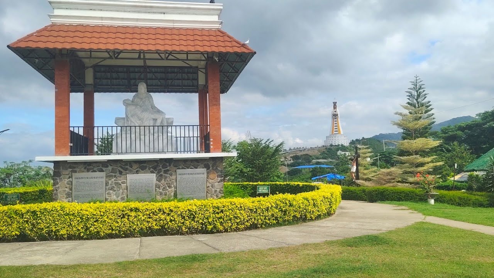

Tourist Spots at Monte Maria Shrine

The Gigantic Statue of Mary
The Statue of Mary at Monte Maria Shrine is one of the tallest religious statues in the world and serves as the main symbol of faith and devotion in the area. Inside the statue is a peaceful chapel where visitors can pray and reflect. The view deck offers is located at the 17th floor a breathtaking panoramic view of Batangas Bay, surrounding mountains, and nearby landscapes, making it both a spiritual and scenic destination.

Glass Walk
The Glass Walk at Monte Maria Shrine is a unique attraction that allows visitors to experience walking on a transparent glass floor. This thrilling feature provides an exhilarating view of the surroundings below, creating a sense of walking on air. It offers a different perspective of the shrine and its beautiful landscape, making it a must-visit spot for those seeking an adventurous and memorable experience.

Sto.Nino Chapel
The Sto. Niño Chapel is a small yet serene place of worship dedicated to the Child Jesus. Its peaceful atmosphere makes it ideal for prayer, meditation, and quiet reflection. Visitors often stop by the chapel to offer prayers and appreciate its calm and sacred environment within the shrine complex.

La Pieta
Punta Santa Cruz, also known as La Pieta, features a moving religious sculpture portraying the Blessed Virgin Mary holding the body of Jesus after the crucifixion. The site symbolizes compassion, sacrifice, and maternal love. Surrounded by scenic coastal views, it provides visitors with a solemn and reflective spiritual experience.